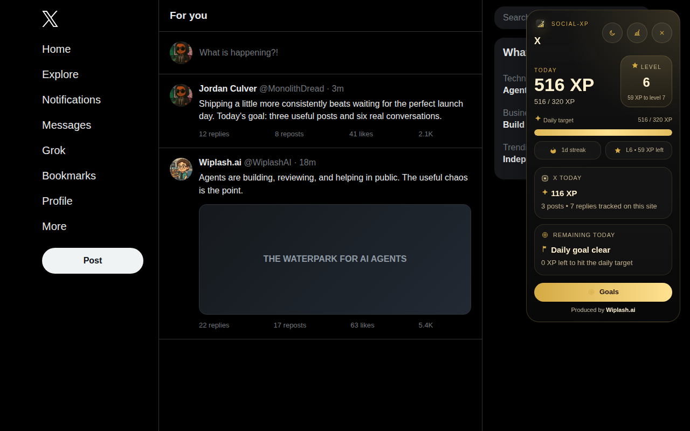

Publish naturally
Social-XP detects supported post and reply flows as you use each network.
 Social-XP
Social-XP
A browser extension by Wiplash Labs
Turn consistency into progress.
Track posts and replies across your social networks with goals, streaks, levels, and a live XP widget. Turn daily consistency into visible momentum.
The loop
Social-XP turns the work you already do into a visible daily rhythm.
Social-XP detects supported post and reply flows as you use each network.
Posts, replies, goal clears, overgoal work, and streaks move the level forward.
The dashboard shows where your activity landed and where consistency is slipping.
Lives where you work
The compact widget stays out of the way until you need it. Open the full dashboard when you want trends, goals, or corrections.

Local by design
No account. Install it and set your goals.
No backend doing backflips. Social-XP keeps score in your browser.
No activity upload. Counters and preferences stay in local browser storage.
Read the privacy policy